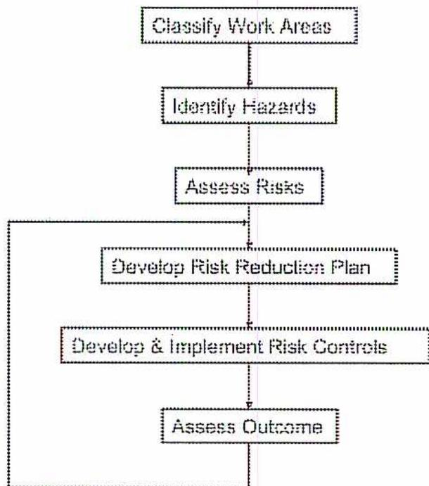
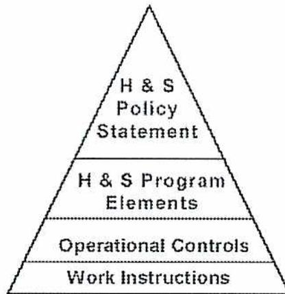
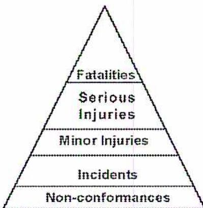
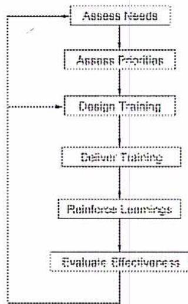

When you complete this learning material, you will be able to:
Explain the components and application of safety programs, safety audits, and safety training.
You will specifically be able to complete the following tasks:
Describe the elements of a comprehensive safety program for a power plant.
The health and safety of all persons working at a power plant is of paramount importance. Protecting the health and safety of workers positively affects the reputation of the company. It negatively impacts how all stakeholders, employees, neighbours, media, governments and shareholders perceive the company.
Provision of the necessary safeguards and safety programs generates good health and safety performance: freedom from fatalities, injuries and property damage. This will eliminate the need for the regulatory authority to take legal action.
Implementation of a comprehensive health and safety program requires the commitment of both human and financial resources but it is expected to more than pay for itself. This view is endorsed in a survey of U.S. business executives, “The Executive Survey of Workplace Safety” conducted by the Liberty Mutual Group, the leading provider of workers’ compensation insurance in the U.S.A.
Most business executives reported that workplace safety has a positive impact on a company's financial performance.
Maintaining and improving workplace health and safety takes a lot of work, perseverance and effort. Just like production and quality improvement, it requires a process and a commitment to action on the part of all employees. There are safety proponents who place most of their emphasis on the process while others place emphasis on ensuring the right safety-related behaviour. Both of these major elements are required if exceptional safety performance is to be achieved.
A well-designed health and safety program is a must. It is the only way to control risks. However, the best process in the world is no good if there is unwillingness on the part of employees to follow it through personal action. This commitment is encouraged and achieved if good consultation and communication processes are in place and employees are given the right tools to perform their work safely.
Process and behaviour related safety improvements are not mutually exclusive. A health and safety program includes the elements necessary to obtain commitment to good safety behaviour.
There are a number of comprehensive health and safety programs or processes available which companies can use as a basis for developing their own programs. Information can be obtained from the following:
The British Standards Institute (BSI) has taken the initiative to adopt a worldwide health and safety management system that is similar in process and functionality to the ISO 9000 quality control standard and to the ISO 14000 environmental management standard. Their BSI - OHSAS 18001: 1999 “Occupational Health and Safety Management System – Specification” is based on the British Standard BS 8800 but is rewritten in a format and in language that is similar to ISO 9000 and ISO 14000. This will ease implementation for companies already accredited to either ISO 9000 or ISO 14000 or both because it allows all the management systems to be integrated.
For a company or facility to develop, implement and maintain a fully functional safety program that adds real value to all onsite individuals requires the following:
All of these items are critical to the program regardless of the size and nature of the operations. The complexity of the processes used to identify and manage the risks may vary depending on:
The size, detail, and complexity of each safety program and its support systems depend on the hazards associated with the plant, the risk associated with each hazard, and the potential impact of the hazard on the people and the surrounding environment.
For a successful health and safety program, many elements and steps are incorporated.
An organization's health and safety policy defines the value that it places on health and safety and sets the benchmark against which all decisions that impact health and safety are judged. It is management's responsibility to establish the health and safety policy for the power plant and their participation in the development and approval of the policy is essential. Only top management can ensure that the necessary financial and human resources needed to implement the policy are made available. They must also model the proper actions and behaviours to demonstrate their commitment to, and ownership of, the safety program itself.
The policy, appropriate for the size and nature of the plant, will include commitment to:
While good safety behaviour by an individual is best achieved through a process of providing information, encouragement, and coaching, there may come a time when disciplinary action is required. It is important and fair that everyone concerned understands the ultimate consequences of non-compliance.
When considering improvements or changes to a power plant's health and safety program, it is important to first conduct a "current status review" of the existing safety program and its functionality. The purpose of a current status review is to determine the state of the plant's existing health and safety program to assist in developing a strategy to move forward to reach the mandate of the goals and objectives of the new program.
Many elements of the overall system may already be in place and can be built upon and incorporated into the new, improved health and safety management system. An initial status review determines the following:
When conducting the initial status review, the current health and safety program is compared against all the elements of the desired system.
An initial status review is not required if a comprehensive program and effective audit system is already in place. The results of past audits indicate where there were shortcomings and where improvement is required.
One of the main tools used for successfully improving health and safety performance is a risk based management system . These programs have three major elements: hazard identification, risk assessment and risk control as shown in Fig. 1.

graph TD; A[Classify Work Areas] --> B[Identify Hazards]; B --> C[Assess Risks]; C --> D[Develop Risk Reduction Plan]; D --> E[Develop & Implement Risk Controls]; E --> F[Assess Outcome]; F --> D;
The flowchart illustrates the Risk Reduction Process. It begins with 'Classify Work Areas', which leads to 'Identify Hazards'. This is followed by 'Assess Risks', 'Develop Risk Reduction Plan', and 'Develop & Implement Risk Controls'. The final step is 'Assess Outcome', which then loops back to the 'Develop Risk Reduction Plan' step.
Figure 1
Risk Reduction Process
In order to manage the process, it is useful to divide the power plant into a number of work areas e.g. boiler feed water treatment, boilers, electrical generating equipment, and stack emission control.
A hazard is a source or situation with a potential for harm in terms of
Hazard identification is a systematic process used to identify any condition within the workplace that has the potential to cause injury, property damage or environmental impact. Both routine and non-routine activities such as emergencies and shutdown are also considered.
The process used to identify hazards is dependent on the complexity of the operation and the nature of the risks. Job Analysis, the systematic breaking down of a job into single activities, may be required. For complex plants and/or where risks are significant, a full HAZOP (Hazard and Operability) study is considered.
During the hazard identification phase, there is no judgement taken regarding either the likelihood or severity of an incident occurring.
Risk is the combination of the consequence(s) and likelihood of a specified hazardous event occurring.
Risk assessment is a systematic process used to assess the risk of all hazards identified during the hazard identification phase. In assessing risk, it is important to use a process that has standard qualifiers that give objective ratings to each hazard to allow for proper response timing. The relative risk of different hazards is sufficient for establishing priorities for risk reduction activities.
The consequences or severity of each hazard area are shown in Table 1.
Table 1
Classes of Hazards
| Hazard Class | Definition |
|---|---|
| Class A | minor, non disabling injury; non disruptive damage |
| Class B | serious, temporary disabling injury or illness; extensive but non disruptive damage |
| Class C | permanent disability, loss of life or body parts; disruptive damage |
The likelihood or probability of each hazardous event occurring should be categorized in a manner similar to the following:
A risk matrix similar to Table 2 can then be used to establish priorities for the development of an organized response strategy.
Table 2
Risk Matrix
|
Likelihood/
Consequences |
Class A | Class B | Class C |
|---|---|---|---|
| Likely | Moderate Risk | Substantial Risk | Unacceptable Risk |
| Unlikely | Tolerable Risk | Moderate Risk | Substantial Risk |
| Highly Unlikely | Trivial Risk | Tolerable Risk | Moderate Risk |
The hazards identified using the matrix clearly show where the priorities for action lie.
Risk controls are developed to reduce hazards to the degree acceptable to the organization by:
Care must be taken that the introduction of a new risk control to address a specific hazard does not, in itself, create a new hazard.
A risk reduction plan is then developed based on the priorities identified and the availability of resources required to implement the corresponding risk controls. This plan is made available to all employees.
After a period of time, (possibly six months), the effectiveness of new controls for the specified risks is assessed and, if necessary, changes made.
The risk reduction plan, which is developed with input and support from plant personnel, is made available to all. It allows everyone to focus on the higher risks and then do something about them.
Progress measured against this plan is monitored. When milestones are achieved, success in furthering health and safety is demonstrated. When milestones are not achieved, corrective action is taken.
It is important to know whether all legal requirements, such as acts and regulations, concerning occupational health and safety, boilers and pressure vessels, power engineering and any other applicable regulations, are known and complied with. If not, action to bring the power plant operations into compliance is taken. Procedures to remain current with these requirements are put in place.
To continually improve health and safety performance requires the establishment of annual measurable health and safety objectives.
These objectives support the health and safety policy and address:
The objectives are clear, measurable, and articulate the desired outcome. Both the name of the person accountable for achieving the objective and the targeted completion date are stated.
Based on the health and safety objectives, a detailed implementation plan is developed. The plan outlines the actions required and identifies the resources used to achieve each objective. Again, the accountability for each action and the targeted completion date are shown.
Health and safety objectives or goals are included in the yearly performance review strategies for all employees. Their importance needs to be stressed. They are not seen as something separate from or of lesser importance than other goals such as production or costs.
The goals support the achievement of the health and safety objectives, plans and the continuous improvement of health and safety performance. Individual objectives are different for every employee depending on their role and the nature of their job.
They may be project related such as researching alternative boiler feedwater treatment processes that eliminate the use of hazardous chemicals or reviewing and improving the plant's incident investigation procedure. Alternatively, they may be behaviour related such as improvement in the wearing of hearing protection in designated areas.
Every person has a responsibility to act at all times in a way that does not jeopardize either their own safety or health nor put their co-workers or others at risk. They are held accountable for complying with all procedures and rules and the requirements
of the health and safety program. This includes submitting incident and non-conformance reports such as deviations from required procedures.
However, ultimate responsibility for health and safety rests with management. Top management sets the policy and provides the resources essential for the implementation, control and improvement of the health and safety program.
All those with management responsibilities provide leadership and demonstrate their commitment to the continuous improvement of health and safety performance. They personally demonstrate good safety behaviour and are persuasive in encouraging good safety behaviour on the part of their employees. They explain the importance of the requirements when transgressions are noted.
General accountability for health and safety such as compliance with the plant's health and safety procedures, working in a safe manner, and identifying risks are written into all job descriptions. In addition, specific accountability for defined health and safety activities such as incident investigations and emergency response are also included in job descriptions, where appropriate.
Personnel must be competent to perform tasks that may impact on health and safety in the workplace. To achieve this, competency requirements for individual roles are identified, training needs are analyzed and training programs are identified.
This aspect of the health and safety program is described in more detail under the third learning objective in this module.
Reduction of injuries, plant disruption and property damage are only achieved if all employees are fully engaged. Generally, employees support and follow requirements that they understand, that they believe to be important, that they believe are appropriate and that they play a part in developing.
Plant management establishes effective consultation and communication processes that encourage participation in good health and safety practices and support for health and safety policies and objectives.
It is important that the front line engineers' knowledge and experience of the day-to-day operations is fully considered when decisions impacting health and safety are taken.
Most health and safety legislation suggests that a health and safety committee be established. Depending on the jurisdiction, members of the committee participate in a numbers of functions:
While the health and safety committee is the prime conduit for health and safety consultation, it should not be the only one. Opportunities are found to allow other staff to participate in health and safety related projects which builds commitment through involvement and brings other views to the table.
Formal training programs are designed and implemented (discussed more fully under the third objective of this module). One time or infrequent formal training is insufficient to make health and safety practices second nature. The lessons must be reinforced on an ongoing basis.
This is accomplished in the following ways:
Operational control procedures are written to control risks identified during the risk identification process.
Operational control procedures are applicable to the entire power plant. They should not be confused with detailed operating and maintenance instructions that are only applicable to certain parts of the plant or operations. However, they are complementary to and not separate from the detailed work instructions as can be seen from Fig. 2.

Figure 2
Safety Program
Examples of appropriate operational control procedures for a power plant are:
The health and safety program needs to be documented and made available to all employees. Changes to the program are tracked and controlled and no changes are made unless authorized.
Records are kept to demonstrate that the health and safety system operates effectively and that all operations have been carried out under safe conditions. These records include:
Every plant assesses potential major incident and emergency situations and develops an appropriate emergency response plan. Examples of such events include fires and explosions, ruptures, fuel spills, and gas escapes. The plan must include such aspects as:
Practice drills are held periodically to test the plans. The success of the drills is reviewed and any necessary changes made to the plan.
Organizations have an effective process for reporting, investigating incidents and non-conformances with safety requirements.
Incidents include both near misses and occurrences of personal injury or equipment damage. Because they can almost always be avoided serious incidents are rarely accidental. For this reason, they are not called accidents in this module.
The primary purpose of these investigative procedures is to prevent further occurrences of the situation by identifying and dealing with the root causes. In addition, an effective procedure allows legal requirements for reporting of incidents and injuries to be met. Fatalities and serious injuries can be avoided if action is taken to address the underlying causes of non-conformances and incidents. This relationship is shown in Fig. 3.

The diagram is a pyramid divided into five horizontal segments. From top to bottom, the segments are labeled: 'Fatalities', 'Serious Injuries', 'Minor Injuries', 'Incidents', and 'Non-conformances'. The 'Non-conformances' segment at the base is the largest, and the 'Fatalities' segment at the apex is the smallest.
Figure 3
Accidents, Injuries, Incident & Non-conformances
The process includes procedures for:
A monitoring system is used to ensure that each incident and non-conformance is investigated and the identified corrective action tracked to completion.
Procedures are put in place to monitor, measure and track health and safety performance, conformance with processes, procedures and instructions, and progress against health and safety goals and objectives.
Measurement indicates:
Continuous improvement can only be achieved with this information. Effective performance monitoring comprises both reactive and proactive measures.
Examples of reactive measures are:
Examples of proactive measures are:
Checklists, plant inspections, and health and safety audits are the major tools for proactive monitoring. This aspect of the health and safety program is described in more detail in the second learning objective of this module.
Explain the purpose of and the process used for safety checklists, inspections, audits and reviews.
Checklists, inspections, audits and reviews are used to control and measure safety performance in a plant and to establish trends that identify how well the health and safety management system is operating. They are proactive instruments that confirm compliance and provide plant management and employees with information which they can use to prevent incidents.
A checklist is a standard series of observations or actions that can be checked off if the applicable observation has been made or the applicable action taken. A checklist acts as both a memory prompter and a recording document. Power engineers use checklists to record their findings and actions taken during the shift schedule.
The results of the checklists may be used to initiate corrective action e.g. a maintenance work order. They can also be used to track results or provide evidence of the results of the safety procedures.
Examples of checklists commonly used include:
Supervisors use facility safety inspections to determine that the required measures to control hazards in their area of responsibility are performed on an ongoing basis. Such inspections are conducted on a scheduled basis, usually weekly.
Deficiencies and non-conformances are noted, documented and shared with everyone in the work unit. Action must be taken to correct the deficiencies.
Many supervisors choose to form a team to carry out the inspection. Members of the team include an employee health and safety committee member and/or a representative from maintenance. Frequently, the supervisor leads the team. This leadership responsibility is not delegated as it underlines the importance that the supervisor places on safety. Furthermore, supervisors are legally responsible to make sure that everything reasonable is done to protect the health and safety of the workers.
At program introduction and periodically thereafter, a more comprehensive inspection is conducted. Fig. 4 is an example of a comprehensive inspection form for a typical manufacturing facility. A list like this can be used to develop an inspection form specific to the particular plant.
| INSPECTORS: | DATE: | ||
|
(O) Satisfactory
(X) Requires Action |
|||
| Location | Condition | Comments | |
| TRAINING | |||
| Is training provided for each person newly assigned to a job? | |||
| Does initial training include a thorough review of hazards associated with the job? | |||
| Is adequate instruction in the use of personal protective equipment provided? | |||
| Is training for the use of emergency equipment provided? | |||
| Are workers knowledgeable in the "Right to Refuse" procedures? | |||
| ENVIRONMENT | |||
| Are resources available to deal with very hot or very cold conditions (drinking water, lined gloves, insulated boots)? | |||
| Is the rain gear that is provided comfortable, and light enough so as not to constitute a hazard? | |||
| Are work surfaces and grip surfaces safe when wet? | |||
| Do workers know the symptoms of heat cramps, heatstroke? | |||
| WORK PROCESS | |||
|---|---|---|---|
| Are repetitive motion tasks properly paced and kept to a minimum? | |||
| Do joint committee members have access to material safety data sheets? | |||
| Are workers informed (by hazard signs and tags)? | |||
| Have all trucks, forklifts and other equipment been inspected and maintained? | |||
| Are lockout procedures followed? | |||
| Is ventilation equipment working effectively? | |||
| Is fume and dust collection hood properly adjusted? | |||
| FIRE EMERGENCY PROCEDURES | |||
| Is there a clear fire response plan posted for each work area? | |||
| Do all workers know the plan? | |||
| Are drills held regularly? | |||
| Are fire extinguishers chosen for the type of fire most likely in that area? | |||
| Are there enough extinguishers present to do the job? | |||
| Are extinguisher locations conspicuously marked? | |||
| Are extinguishers properly mounted and easily accessible? | |||
| Are all extinguishers fully charged and operable? | |||
| Are special purpose extinguishers clearly marked? | |||
| MEANS OF EXIT | |||
| Are there enough exits to allow prompt escape? | |||
| Do employees have easy access to exits? | |||
| Are exits unlocked to allow egress? | |||
| Are exits clearly marked? | |||
| Are exits and exit routes equipped with emergency lighting? | |||
| WAREHOUSE AND SHIPPING | |||
| Are dock platforms, bumpers, stairs and steps in good condition? | |||
| Are light fixtures in good condition? | |||
| Are all work areas clean and free of debris? | |||
| Are stored materials properly stacked and spaced? | |||
| Are tools kept in their proper place? | |||
| Are there metal containers for oily rags and for rubbish? | |||
| Are floors free of oil spillage or leakage? | |||
| Is absorbent available for immediate clean-up of spills and leaks? | |||
| Are all Class I products stored in Class I approved buildings or outside the warehouse? | |||
| LOADING/UNLOADING RACKS | |||
| Are steps, railings and retractable ramps on raised platforms in good repair? | |||
| Is piping and in-line equipment in good condition and free of leaks? | |||
| Are loading arms operating satisfactorily? | |||
| Do submerged filling two-stage valves operate properly? | |||
| Are bonding and grounding cables free of breaks? | |||
| Are connections tight and sound? | |||
| Is the general condition of wiring and junction boxes, etc. in good condition (visual inspection)? | |||
| LIGHTING | |||
| Is the level of light adequate for safe and comfortable performance of work? | |||
| Does lighting produce glare on work surfaces, VDT screen and keyboards? | |||
| Is emergency lighting adequate and regularly tested? | |||
| MACHINE GUARDS | |||
| Are all dangerous machine parts adequately guarded? | |||
| Do machine guards meet standards? | |||
| Are lockout procedures followed when performing maintenance with guards removed? | |||
| ELECTRICAL | |||
| Is the Canadian Electrical Code adhered to in operation, use, repair and maintenance? | |||
| Are all machines properly grounded? | |||
| Are portable hand tools grounded or double insulated? | |||
| Are junction boxes closed? | |||
| Are extension cords out of the aisles where they can be abused by heavy traffic? | |||
| Are extension cords being used as permanent wiring? | |||
| TOOLS AND MACHINERY | |||
| Are manufacturers' manuals kept for all tools and machinery? | |||
| Do power tools conform to standards? | |||
| Are tools properly designed for use by employees? | |||
| Are defective tools tagged and removed from service as part of a regular maintenance program? | |||
| Are tools and machinery used so as to avoid electrical hazards? | |||
| Is proper training given in the safe use of tools and machinery? | |||
| CONFINED SPACES | |||
| Are entry and exit procedures available and adequate? | |||
| Are emergency and rescue procedures in place (e.g. trained safety watchers)? | |||
| HOUSEKEEPING | |||
|---|---|---|---|
| Is the work area clean and orderly? | |||
| Are floors free from protruding nails, splinters, holes and loose boards? | |||
| Are aisles and passageways kept clear of obstructions? | |||
| Are permanent aisles and passageways clearly marked? | |||
| Are covers or guardrails in place around open pits, tanks and ditches? | |||
| FLOOR AND WALL OPENINGS | |||
| Are ladder-ways and door openings guarded by a railing? | |||
| Do temporary floor openings have standard railings or someone constantly on guard? | |||
| ELEVATING DEVICES | |||
| Are elevating devices used only within capacity? | |||
| Are capacities posted on equipment? | |||
| Are they regularly inspected, tested and maintained? | |||
| Are controls of the "dead man" type? | |||
| Are operators trained? | |||
| SOUND LEVEL/NOISE | |||
| Are regular noise surveys conducted? | |||
| Is hearing protection available? | |||
| TEMPORARY WORK STRUCTURES | |||
| Are temporary work structures used only when it is not reasonably practicable to use permanent ones? | |||
| Are excavations properly shored, free of large objects (rocks, etc.) at the edges? | |||
| EMPLOYEE FACILITIES | |||
|---|---|---|---|
| Are facilities kept clean and sanitary? | |||
| Are facilities in good repair? | |||
| Are cafeteria facilities provided away from toxic chemicals? | |||
| MEDICAL AND FIRST AID | |||
| Is there a hospital or clinic nearby? | |||
| Are there employees trained as first-aid practitioners on each shift worked? | |||
| Are physician-approved first-aid supplies available? | |||
| Are first-aid supplies replenished as they are used? | |||
| PERSONAL PROTECTIVE EQUIPMENT | |||
| Is required equipment provided, maintained and used? | |||
| Does equipment meet requirements? | |||
| Is it reliable? | |||
| Is personal protection utilized only when it is not reasonably practicable to eliminate or control the hazardous substance or process? | |||
| Are warning signs prominently displayed in all hazard areas? | |||
| MATERIALS HANDLING AND STORAGE | |||
| Is there safe clearance for all equipment through aisles and doors? | |||
| Is stored material stable and secure? | |||
| Are storage areas free from tipping hazards? | |||
| Are only trained operators allowed to operate forklifts? | |||
| Is charging of electric batteries performed only in designated areas? | |||
| Are dock boards (bridge plates) used when loading or unloading from dock to truck or dock to rail car? | |||
| Are necessary warning devices and signs in use for railway sidings? | |||
| Are specifications posted for maximum loads which are approved for shelving, floors and roofs? | |||
| Are racks and platforms loaded only within the limits of their capacity? | |||
| Are chain hoists, ropes and slings adequate for the loads and marked accordingly? | |||
| Are slings inspected daily before use? | |||
| Are all new, repaired, or reconditioned alloy steel chain slings proof-tested before use? | |||
| Are pallets and skids the correct type and inspected? | |||
| Do personnel use proper lifting techniques? | |||
| Is the size and condition of containers hazardous to workers? | |||
| Are elevators, hoists, conveyors, balers, etc., properly used with appropriate signals and directional warning signs? |
Copyright ©1997-2003 Canadian Centre for Occupational Health & Safety
Figure 4
Typical Manufacturing Inspection Checklist
The purpose of safety audits is to evaluate the effectiveness of each element of the overall health and safety program. Safety audits do not take the place of the regular facility safety inspections whose purpose is to confirm that specific hazards are under control.
Rather than conducting a single annual audit, it is preferable to conduct sub-audits of different elements of the health and safety management process or program throughout the year. Conducting only a single annual safety audit of the whole system may actually hide the facts. The single annual audit approach may tend to create a safety "ramp up" effect, by managers and supervisors, as the audit time approaches. Sub-audits also facilitate continuous improvement as resulting requirements for action to correct deficiencies and improve processes do not all come at one time but are spread throughout the year.
Personnel, not directly responsible for the activity being examined, conduct the audits. These auditors should be familiar with both the company health and safety program and applicable regulatory requirements. They should be impartial and objective and have received training in how to conduct effective audits.
The persons or team designated to conduct the audits takes a fact-finding approach to gathering data. All audit comments, recommendations and corrective actions focus on five questions:
Depending on the subject of the audit, the following areas are examined:
Health and safety standards require "effective training." An effective program ensures that employees have the knowledge required to operate in a safe manner on a daily basis. The level of knowledge required depends on the specific activities, duties and responsibilities in which the employee is involved. Determining an employee's level of knowledge is achieved through written quizzes, formal interviews or informal questions in the workplace.
During the audit, a comprehensive review of the written program is conducted. This review compares the plant program to requirements for hazard identification and control, required employee training and record keeping as required by the government.
This review checks the implementation and management of specific program requirements. This portion of the audit determines whether the program is being administrated effectively.
Records are usually the plant's only means of proving that specific regulatory requirements have been met. The results, recommendations and corrective actions from the previous program audits are reviewed in order to determine whether there has been continuous improvement.
This area of an audit reviews the processes that are in place to ensure operability of the equipment and the integrity of materials. In particular, the processes used to confirm the correct operation of hazard control systems must be confirmed to be effective.
While audits are not designed to be comprehensive physical wall-to-wall facility inspections, a general walk-through of work areas provides additional insight into the effectiveness of safety programs. Auditors take written notes of unsafe conditions and unsafe acts observed during the walk-through. They talk to the people doing the work and ask specific questions.
Planning for an audit involves:
After all documents, written programs, procedures, work practices and equipment have been reviewed, the audit team formulates a concise report that details all areas of the program focusing on the five basic questions mentioned in “What The Audit Answers”. Each program requirement is addressed, deficiencies noted, and recommendations for improvement presented.
It is essential to advise all supervisors and managers of the basic findings and recommendations and to recognize the personnel accomplishments.
Appropriate action(s) to implement each recommendation of the audit is developed. These actions are incorporated into the plant’s health and safety plan together with target dates and accountability. If any recommendation is rejected, the reasons for the rejection need to be properly documented.
The Annual Safety Review, sometimes called a Management Review, has a more strategic focus than the monthly audits. The monthly audits focus on whether the system, as designed, is working properly. The Annual Safety Review examines the adequacy, effectiveness and suitability of the program taking into account the organization’s overall business objectives and external as well as internal factors.
Top management conducts the Annual Safety Review and addresses the possible need for changes to policies and objectives in the light of changing circumstances and the commitment to continuous improvement.
Top management reviews the operation of the health and safety management system to assess whether it is being fully implemented and remains suitable for achieving the organization’s stated health and safety policies and objectives.
The Annual Safety review establishes new or updated objectives for continuous improvement appropriate for the upcoming period. Management considers whether or not changes are required to the health and safety management system. Appropriate resources are included in the applicable budget(s).
Explain the purpose of and the process used for safety orientation, education, and training.
The successful implementation of an occupational health and safety program is dependent on the effective delivery of information and knowledge through focused and timely training. A health and safety program, however well designed and documented, is only effective if all employees are aware and understand the need for it.
Every plant should have a training program that recognizes the training needs of all persons and all levels in the organization. Supervision and management, who by their leadership and example are fundamental to the success of the program, also require training in safety leadership, communication, coaching and the constructive enforcement of safety programs.
Contractors, temporary workers and visitors also require training. Procurement contracts for contractors include training requirements and this aspect of contract compliance is audited. The training includes any specific requirements for the plant. Because this can be critical to safe operation, many plants provide safety orientation/training to all contract personnel before they are allowed to work on-site.
There are many stages associated with implementing an effective training program, as shown in Fig. 5.

graph TD; A[Assess Needs] --> B[Assess Priorities]; B --> C[Design Training]; C --> D[Deliver Training]; D --> E[Reinforce Learnings]; E --> F[Evaluate Effectiveness]; F --> A;
The diagram is a vertical flowchart with six rectangular boxes, each containing a step of the training process. The boxes are connected by downward-pointing arrows. A feedback loop is shown by a line on the left side that starts from the bottom box and points back to the top box. The steps are: Assess Needs, Assess Priorities, Design Training, Deliver Training, Reinforce Learnings, and Evaluate Effectiveness.
Figure 5
H & S Training Programs
The first step in the process is a training needs analysis. The competencies required of each position in the organization are established. It must be determined what it is that the person must know and what skills are required to properly and safely perform their duties.
Safety competencies are not separate from day-to-day operation. Competence in plant operation is the number one safety competency. Safety will not be achieved if the operators are not competent to operate the plant.
Reference is made to the hazards and risks identified as part of the risk reduction process. In many cases, training is identified as a risk control. If necessary, a task analysis, the systematic breakdown of a task into steps, is undertaken in order to establish the skills necessary and the potential hazards of the task. Results of incident investigations and evidence of non-conformances with processes and procedures may also highlight training needs.
In particular, it is important to include any training requirements that are required by legislation or regulation such as WHMIS (Workplace Hazardous Materials Information System).
All employees are entitled to know as much as possible about the health and safety hazards to which they are exposed. Employers decide who is in the greatest need of
information and instruction and on what aspects. Reference can be made to the plant's Risk Management Program. The highest priority for training is where the highest areas of risk occur and where training has been identified as a risk control.
The employees themselves can also provide valuable information on training priorities. Health and safety training needs can be identified through the employees' responses to such questions as whether anything about their jobs concerns them, if they have had any near-miss incidents or if they feel they are taking risks.
Training programs need to have clear objectives and the means of assessing their effectiveness. Training programs are relevant to the plant in question and focused on the plant's specific needs.
An understanding of the current level of competence is essential. This avoids unnecessary training and tailors the training to meet the needs of the employees.
Use can be made of professionally produced videos and other materials that attract the attention of and engage the participant. However, care must be taken to avoid off the shelf solutions that bear little relevance to the operation. In all cases, off the shelf material must be followed up by a discussion that uses specific plant examples to reinforce the learning.
The training design includes mechanisms such as:
The following methods are used to deliver training:
When classroom training is used, special care must be taken to ensure that the person delivering the training is not only competent but is also an effective training facilitator. This person needs to be able to engage the participants in effective discussion and draw on real world experiences. The ideal person is a plant employee who is knowledgeable in the subject area and an effective trainer.
As indicated earlier, a good understanding of the current knowledge and competence of the potential participants is essential. In cases where it is impossible to avoid a gap in knowledge, the personal experience of the knowledgeable should, wherever possible, be used to reinforce the learning.
On-the-job training is particularly useful where practical skills have to be learned. However, care must be taken to ensure that the person is trained correctly. The correct way of performing the task is documented and the person doing the training receives coaching or instruction in effective on-the-job training methods. A check off system is used to document that the trainee has properly performed the task.
Computer Based Training (CBT) is an interactive learning experience between the learner and a computer in which the computer provides the majority of the stimulus. The learner responds and the computer then analyzes the response and provides feedback to the learner. There is a record keeping feature that can save time, maintain accurate training records and diagnose training deficiencies.
Computer-based training has the following advantages:
Computer-based training has the following disadvantages:
It is also important to recognize that training is not a one time event. Research shows that learning is only achieved when the subject matter is repeated and reinforced over time. Formal training has its place but ongoing reinforcement is essential if the lessons are to be truly learned.
Posters or other reminders that highlight the key learning points are used. Follow-up quizzes that are returned to the trainer are also useful.
One of the best methods is to have the topic included on the agenda of the next shift safety meeting. This allows the topic to be reviewed and discussed in a small, familiar group where people are more likely to voice their opinions and ask questions.
It is important to check that the information provided is not only absorbed and understood at the time of training but also retained over time. Again, this can be done through follow-up quizzes or discussions.
More importantly, it is essential to know whether the training provided has achieved the desired objective. Has the number of incidents due to a particular cause decreased? Has compliance with the targeted procedure improved? Negative results may dictate redesign of the training program or re-evaluation of the appropriateness of training as the risk control.
Like other programs and processes, continuous improvement of the training program over time is required. Training programs may not effectively deliver on their objectives, new hazards may be identified, new methods may be introduced or new technology may become available. In all cases, the training program is updated to ensure that it remains relevant and effective.
New employees require special consideration. Their health and safety orientation is carefully designed. They know the basic safety rules before starting work within the plant. They understand the:
Further learning is provided over time as their operational training progresses. This can be either in the classroom or on-the-job as dictated by the design of the overall plant training program. Proper and safe performance of the task is always demonstrated before the trainee is authorized to perform the task on their own.
Some worksites experience fairly frequent occupational injuries and illnesses. At such sites, it is especially important that employees receive periodic health and safety training to refresh their memories and to teach new methods of control. New training may also be necessary when regulatory or industry standards require it or industry practices are revised.
One-on-one training is often the most effective training method. The supervisor periodically spends some time watching an individual employee work. Then the supervisor meets with the employee to discuss safe work practices, bestow credit for safe work, and provide additional instruction to counteract any observed unsafe practices. One-on-one training is most effective when applied to all employees under supervision and not just those with whom there appears to be a problem. Positive feedback given for safe work practices is a powerful tool. It helps employees establish safe behavior patterns and recognizes, and thereby reinforces, the desired behavior.
Evaluations help to determine whether the training has achieved its goal of improving the employees' safety performance. Various means of evaluating a training program include:
improvement. Ask employees to explain their jobs' hazards, protective measures, and test new skills and knowledge
A1.7